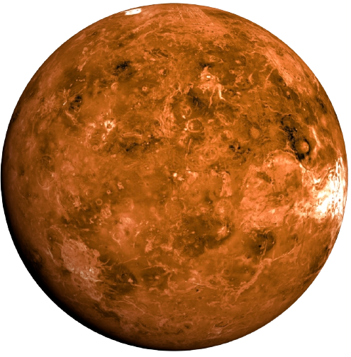

VENUS
- Here we have the second planet from the sun, also called the ”Morning and Evening star” and named after the Roman goddess of love and beauty. Apart from being the second-brightest natural object in Earth's night sky, Venus is referred to as the “sister planet” to Earth because of similarities in their size and mass.
- Unlike other planets, venus spins clockwise on its axis.
- It has 90 times the atmospheric pressure of Earth.
- Orbital period: 225 days
- Length of day: 116 days 18 hours 0 minutes
- Distance from sun: 108.2 million km
- Surface area: 460.2 million sq. km
- Surface temperature: 740K (467 degree centigrade, 872 degree Fahrenheit
